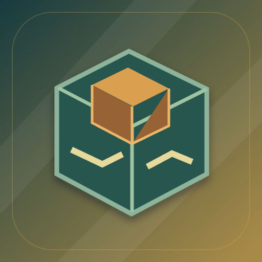

<- all projects

Engenho
PC
Volume
Live
Small parts. Beautiful systems.
Build a line that keeps working on its own. Lia reopens a cooperative workshop by delivering each part to the right place at the right time. Place machines, rotate conveyors, wire them to the power bus, set flow and speed and add buffers so one fast machine does not block another, then run the line or step it one tick at a time. Thirty orders introduce eighteen modules, four raw-material chains and twelve compound recipes, with stars for faster, cheaper and leaner lines. There is also a daily challenge, generated contracts, a free workshop and a blueprint archive.